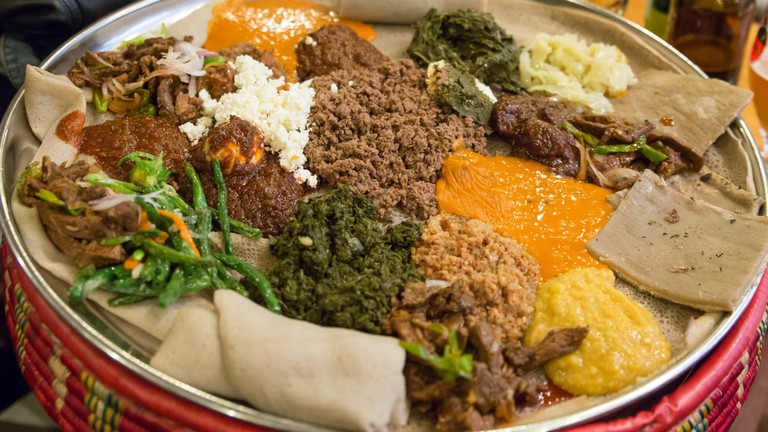

Literature
I was introduced to the habit of reading by going the British Library back home in Eritrea when I was in Elementary School. I was introduced to African and British literature. Reading like “A Tale of Two Cities” and “Great Expectations” by Charles Dickens was my favorite weekend past time. And it was then that I was introduced to some of the greatest African Literature writers such as Chinuwa Achebe and his famous book “Things Fall Apart “ which taught me about colonialism and its aftermath in the late nineteenth century. Then, after joining the English Department at the University , I was able to broaden my knowledge to variety of literature creations. One of my favorite modern authors is another Nigerian author- Chimamanda Ngozi Adichie and one of her many outstanding creations is her world renowned book “Half of a Yellow Sun”.
Cooking
Another hobby that I have is cooking. Specially traditional Eritrean Food. It is mostly made from scratch almost all the time. Here are some images of what and how we eat it: link here
